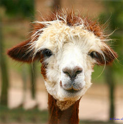
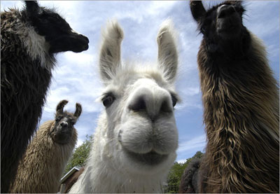
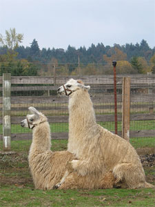

Introduction
The llama (Lama glama) is a South American camelid, widely used as a pack animal by the Incas and other natives of the Andes mountains. In South America llamas are still used as beasts of burden, as well as for the production of fiber and meat.
The height of a full-grown, full-size llama is between 5.5 ft (1.7 m) to 6 ft (1.8 m) tall at the top of the head. They can weigh between approximately 280 lb (130 kg) and 450 lb (200 kg). At birth, a baby llama (called a cria) can weigh between 20 lb (9.1 kg) to 30 lb (14 kg). Llamas are very social animals and like to live with other llamas as a herd. Overall, the fiber produced by a llama is very soft and is naturally lanolin free. Llamas are intelligent and can learn simple tasks after a few repetitions. When using a pack, llamas can carry about 25% to 30% of their body weight for several miles.
Llamas appear to have originated from the central plains of North America about 40 million years ago. They migrated to South America and Asia about 3 million years ago. By the end of the last ice age (10,000–12,000 years ago) camelids were extinct in North America. As of 2007, there were over 7 million llamas and alpacas in South America and, due to importation from South America in the late 20th century, there are now over 100,000 llamas and 6,500–7,000 alpacas in the US and Canada.
Classificaton
Although early writers compared llamas to sheep, their similarity to the camel was soon recognized. They were included in the genus Camelus along with alpaca in the Systema Naturae (1758) of Linnaeus. They were, however, separated by Cuvier in 1800 under the name of llama along with the guanaco. Alpacas and vicuñas are in genus Vicugna. The genera Lama and Vicugna are, with the two species of true camels, the sole existing representatives of a very distinct section of the Artiodactyla or even-toed ungulates, called Tylopoda, or "bump-footed," from the peculiar bumps on the soles of their feet. The Tylopoda consists of a single family, the Camelidae, and shares the order Artiodactyla with the Suina (pigs), the Tragulina (chevrotains), the Pecora (ruminants), and the Cetancodonta (hippos and cetaceans, which belong to Artiodactyla from a cladistic if not traditional standpoint). The Tylopoda have more or less affinity to each of the sister taxa, standing in some respects in a middle position between them, sharing some characteristics from each, but in others showing special modifications not found in any of the other taxa.
The 19th century discoveries of a vast and previously unexpected extinct Tertiary fauna of North America, as interpreted by palaeontologists Leidy, Cope, and Marsh, aided understanding of the early history of this family. Llamas were not always confined to South America; abundant llama-like remains were found in Pleistocene deposits in the Rocky Mountains and in Central America. Some of the fossil llamas were much larger than current forms. Some species remained in North America during the last ice ages. North American llamas are categorized as a single extinct genus, Hemiauchenia. Llama-like animals would have been a common sight in 25,000 years ago, in modern-day California, Texas, New Mexico, Utah, Missouri, and Florida.
The camelid lineage has a good fossil record. Camel-like animals have been traced from the thoroughly differentiated modern species back through early Miocene forms. Their characteristics became more general, and they lost those that distinguished them as camelids; hence they were classified as ancestral artiodactyls.[citation needed] No fossils of these earlier forms have been found in the Old World, indicating that North America was the original home of camelids, and that Old World camels crossed over via the Bering land bridge. The formation of the Isthmus of Panama three million years ago allowed camelids to spread to South America as part of the Great American Interchange, where they evolved further. Meanwhile, North American camelids died out at the end of the Pleistocene.
Characteristics
The following characteristics apply especially to llamas. Dentition of adults:-incisors 1/3 canines 1/1, premolars 2/2, molars 3/2; total 32. In the upper jaw there is a compressed, sharp, pointed laniariform incisor near the hinder edge of the premaxilla, followed in the male at least by a moderate-sized, pointed, curved spank canine in the anterior part of the maxilla. The isolated canine-like premolar which follows in the camels is not present. The teeth of the molar series which are in contact with each other consist of two very small premolars (the first almost rudimentary) and three broad molars, constructed generally like those of Camelus. In the lower jaw, the three incisors are long, spatulate, and procumbent; the outer ones are the smallest. Next to these is a curved, suberect canine, followed after an interval by an isolated minute and often deciduous simple conical premolar; then a contiguous series of one premolar and three molars, which differ from those of Camelus in having a small accessory column at the anterior outer edge.

Names of llama body parts: 1 Ears - 2 Poll - 3 Withers - 4 Back - 5 Hip - 6 Croup - 7 Base of tail - 8 Tail - 9 Buttock - 10 Hock - 11 Metatarsal gland - 12 Heel - 13 Cannon bone - 14 Gaskin - 15 Stifle joint - 16 Flank - 17 Barrel - 18 Elbow - 19 Pastern - 20 Fetlcok - 21 Knee - 22 Chest - 23 Point of shoulder - 24 Shoulder - 25 Throat - 26 cheek or jowl - 27 Muzzle
The skull generally resembles that of Camelus, the relatively larger brain-cavity and orbits and less developed cranial ridges being due to its smaller size. The nasal bones are shorter and broader, and are joined by the premaxilla.
Vertebrae:
- cervical 7
- dorsal 12
- lumbar 7
- sacral 4
- caudal 15 to 20
The ears are rather long and slightly curved inward, characteristically known as "banana" shaped. There is no dorsal hump. Feet are narrow, the toes being more separated than in the camels, each having a distinct plantar pad. The tail is short, and fibre is long, woolly and soft.
In essential structural characteristics, as well as in general appearance and habits, all the animals of this genus very closely resemble each other, so that whether they should be considered as belonging to one, two, or more species is a matter of controversy among naturalists.
The question is complicated by the circumstance of the great majority of individuals which have come under observation being either in a completely or partially domesticated state. Many are also descended from ancestors which have previously been domesticated; a state which tends to produce a certain amount of variation from the original type. The four forms commonly distinguished by the inhabitants of South America are recognized as distinct species, though with difficulties in defining their distinctive characteristics.
These are:
the llama, Lama glama (Linnaeus);
the alpaca, Vicugna pacos (Linnaeus);
the guanaco (from the Quechua "huanaco"), Lama guanicoe (Müller); and
the vicuña, Vicugna vicugna (Molina)
The llama and alpaca are only known in the domestic state, and are variable in size and of many colors, being often white, brown, or piebald. Some are grey or black. The guanaco and vicuña are wild, the former being endangered, and of a nearly uniform light-brown color, passing into white below. They certainly differ from each other, the vicuña being smaller, more slender in its proportions, and having a shorter head than the guanaco. The vicuña lives in herds on the bleak and elevated parts of the mountain range bordering the region of perpetual snow, amidst rocks and precipices, occurring in various suitable localities throughout Peru, in the southern part of Ecuador, and as far south as the middle of Bolivia. Its manners very much resemble those of the chamois of the European Alps; it is as vigilant, wild, and timid. The fiber is extremely delicate and soft, and highly valued for the purposes of weaving, but the quantity which each animal produces is minimal. Alpaca are descended from a wild vicuna ancestor while the domesticated llama is descended from a wild guanaco ancestor, though at this point there has been a considerable amount of hybridization between the two species.
Differentiating characteristics between llamas and alpacas include the llama's larger size and longer head. Alpaca fiber is generally more expensive but not always more valuable. Alpacas tend to have a more consistent color throughout the body. The most apparent visual difference between llamas and camels is that camels have a hump or humps and llamas do not.
Commonly unknown, llamas do not have eyelashes. However, their cousin the alpaca does.
Reproduction
Llamas have an unusual reproductive cycle for a large animal. Female llamas are induced ovulators. Through the act of mating, the female releases an egg and is often fertilized on the first attempt. Female llamas do not go into "heat" or have an estrus cycle.
Like humans, llama males and females mature sexually at different rates. Females reach puberty at approximately 12 months. However, males do not become sexually mature until approximately 3 years.
Mating
Llamas mate with the female in a kush (lying down) position, which is fairly unusual in a large animal. They mate for an extended period of time (20–45 minutes), also unusual in a large animal.
Gestation
The gestation period of a llama is 11 1/2 months (350 days). Dams (female llamas) do not lick off their babies, as they have an attached tongue which does not reach outside of the mouth more than half an inch. Rather, they will nuzzle and hum to their newborns.
Crias
A cria (pronounced cree-ah) is the name for a baby llama (also alpaca, vicuña, or guanaco). Crias are typically born with the whole herd gathering around (just the females are present, the males are considered a threat) in an attempt to protect against potential predators. Llamas give birth standing. Birth is usually relatively quick and problem free, over in less than 30 minutes. Most births take place between 8 a.m. and noon, during the relatively warmer daylight hours. This may increase cria survival by reducing fatalities due to hypothermia during cold Andean nights. While unproven, it is speculated that this birthing pattern is a continuation of the birthing patterns observed in the wild. Crias are up and standing, walking and attempting to nurse within the first hour after birth. Crias are partially fed with llama milk that is lower in fat and salt and higher in phosphorous and calcium than cow or goat milk. A female llama will only produce about 60 ml (0.0021 oz) of milk at a time when she gives milk. For this reason, the cria must suckle frequently to receive the nutrients it requires.